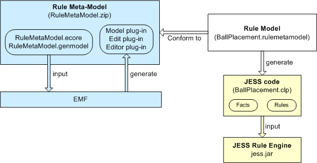
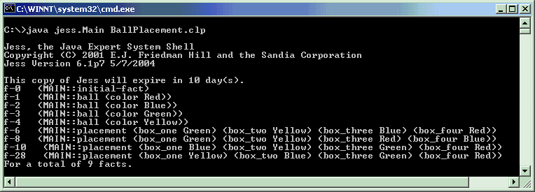
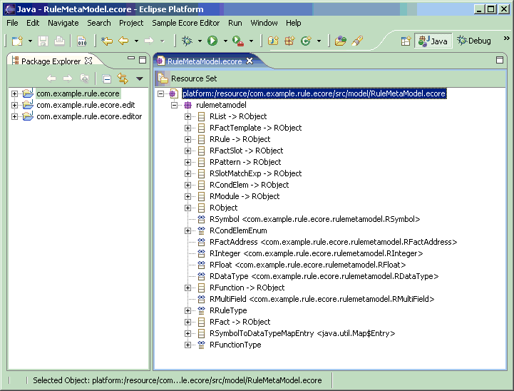
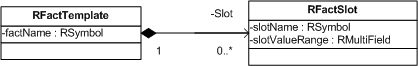
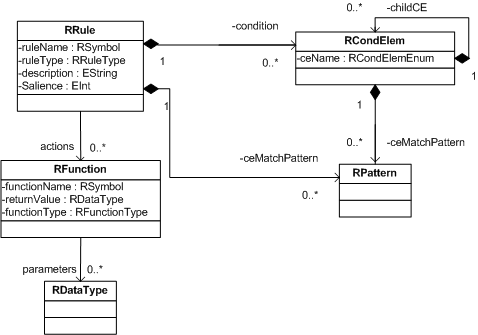
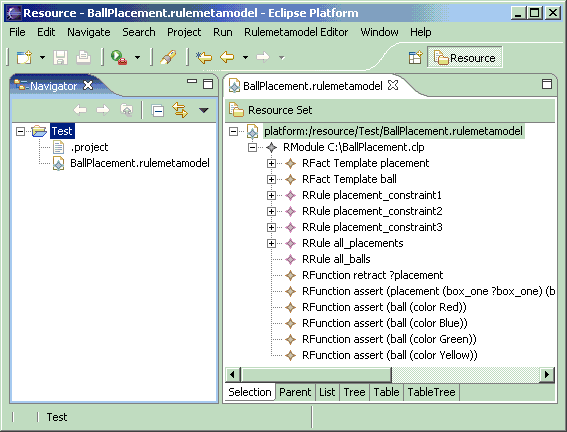

| Eclipse Corner Article |

Summary
There are examples of meta-models defined in ECore for modeling objects and relational data. However, not much has been said about how to model rules. This article will define a meta-model in ECore for modeling rule-based systems. We will then use the meta-model to model the solution of a logical problem. Then we will compose some JET templates and generate code from the model, run the generated code through a rule engine and see that the logical problem is correctly solved.
By Chaur G. Wu, Independent Consultant (cha_urwu@hotmail.com)
November 30, 2004
Before we look at this article’s example, let’s set the stage by going through some background information and make clear some terms that we will use throughout the article. In this part, we will give very brief introduction of rule-based systems and meta-modeling.
So what do we mean by rule-based? In the evolution course of computing, a field called artificial intelligence was developed in the 70s and 80s with an aim to make computers reason like human beings. Rule-based programming paradigm emerged at that time as ways to implement systems that appear to think and reason like human beings. Examples of rule-based systems are expert systems that have the knowledge of a doctor or a tax advisor and can answer complex questions people would normally ask those professionals.
The idea of rule-based programming is to represent a domain expert’s knowledge in a form called rules. That’s why it’s called rule-based. Besides rules, another important ingredient in a rule-based system is facts. Here’s an example. Say John is a weather reporter who gives advice to people on TV channels based on weather conditions. Here’s John’s knowledge about weather:
How do we represent the knowledge in a rule-based system? We represent it as rules and facts like this:
Rule 1: If it’s a rainy day, advise people to bring umbrellas when they go out. Rule 2: If the road is slippery, warn people to drive more carefully. Rule 3: If it’s a rainy day, road is slippery.
Fact 1: It’s a rainy day. Fact 2: Road is slippery.
Here’s how our imaginary expert system mimics the reasoning capability of weather reporter John. If by looking out of the window, we see it’s raining, we tell our expert system that it’s raining by asserting fact number 1. Immediately the expert system tries to match the asserted fact with its three rules. Rules 1 and 3 are fired because the asserted fact satisfies their conditions (the if clause). When rule one is fired (a more accurate term is activated), the system advises people to bring umbrella as if it were a real weather reporter. Firing rule 3 asserts fact 2. And because fact 2 satisfies the conditions of rule 2, rule 2 is fired and the system advises people to drive more carefully. All these chain reactions happen in sequence as the result of asserting fact number 1.
Although the example is nowhere close to the complexity of a practical rule-based system, it shows the following key points:
Among the most popular rule engines, JESS (Java Expert System Shell) is probably of the most interest to Java developers. It is the reference implementation of JSR 094 Java Rule Engine API and it has plug-ins to support development of rule systems in Eclipse. Therefore, the rule code we will see in this article will be in JESS's syntax. Before we leave this section, it’s helpful to introduce JESS and take a glimpse of its programming syntax. JESS is software that interprets rules and facts expressed in its programming language. Just as Java is a language for expressing objects and Java compiler is software that interprets Java code, JESS has a language for expressing rules and facts and a compiler to interpret the code. JESS is developed in Java by Ernest Friedman-Hill at Sandia National Laboratories. Here’s what the rules and facts in our weather example look like in JESS code.
(defrule rule-1 (rainy-day) = > (advise-people bring-umbrella)) (defrule rule-2 (road-slippery) => (advise-people drive-carefully)) (defrule rule-3 (rainy-day) => (assert road-slippery)) (road-slippery) (rainy-day)
The last two lines in the list above are the two facts. The first three lines
are the three rules. Rules in JESS take this form: (defrule
rule-name conditions => actions) Rules are defined using
the defrule construct. rule-1, rule-2,
and rule-3 are the names of the rules respectively. rule-1
has a condition: (rainy-day). In this case, (rainy-day)
is also called a pattern. It is so called because the
rule engine treats it as a pattern for matching facts. The pattern (rainy-day)
in rule-1 will match only one fact: the (rainy-day) fact
in the last line of the code list. When it's matched, the action (advise-people
bring-umbrella) of rule-1 will be executed.
There are a lot more to the syntax of a rule language like JESS. We will only explain those necessary for following along this article. For more details, you can refer to the documentation that comes with JESS.
Sometimes it’s helpful to the discussion if we categorize models into different levels. We call a model a meta-model if it is used to define models. We call a model a meta-metamodel if it is used to define meta-models.
For example, ECore is a model. It can be a meta-model or a meta-metamodel depending on how we use it. When we use ECore to define models of a purchase order system, it plays the role of a meta-model. The Rule Meta Model we will develop later in this article is another example of meta-model. It is a meta-model because we will use it to define a model for a logical problem.
The Rule Meta Model we will develop later is defined in ECore. In this sense, ECore is a meta-metamodel because it is used to define a meta-model. Another example of ECore as a meta-metamodel is EMF’s Gen Model. EMF’s Gen Model is a meta-model that defines models concerning how code is generated. ECore is the meta-metamodel that defines Gen Model.
When we say model A defines model B, in a practical sense, we mean that all model elements in B are instances of model elements in A. We will see this in effect later when we reach the article’s example. For the purpose of this article, the important facts to note are:
The logical problem we will solve with this article’s Rule Meta Model is this:
There are four boxes, labeled from 1 to 4. We have four balls in four colors: red, blue, green and yellow. Our task is to put one ball in each box according to the following three constraints.
The solution to the problem is in RuleMetaModel.zip and BallPlacementRuleModel.zip that come with this article. The code in the zip files requires the following software.
Java Runtime or SDK (The one I use is Java SDK 1.4.2 from Sun Microsystems) Eclipse (The version I use is Eclipse SDK 3.0) EMF (The version I use is EMF SDK 2.0.1 RC2) JESS 7.0a1
Installing JESS is simple. You can download JESS from http://herzberg.ca.sandia.gov/jess/download.shtml. Then unzip the downloaded file to a folder, add jess.jar to your java classpath and you are ready to go. JESS is not free software. After clicking the link above, you’ll be asked to enter your name, company and email. After that, you’ll be taken to the page where you can download various versions of JESS. The one to download for this article is trial version 7.01a1. This version of JESS comes with some Eclipse plug-ins for editing JESS code in the Eclipse IDE. Those plug-ins are not needed for running the code of this article. Installing them is optional.
To install and run the example for this article, unzip RuleMetaModel.zip
into your plugins/ subdirectory. This zip file contains three plug-ins.
They are the model, edit, editor plug-ins EMF generates for our Rule Meta Model.
The other zip file, BallPlacementRuleModel.zip,
contains two files: BallPlacement.rulemetamodel and BallPlacement.clp.
BallPlacement.rulemetamodel is the model that models our logical
problem. It is defined using Rule Meta Model. The other file BallPlacement.clp
is JESS code generated from BallPlacement.rulemetamodel. Below
is a pictorial view of all the components in the two zip files and how they
relate to EMF and rule engine.
Figure 1. Overall picture of the example code.

We will explain each component as we go along. For now, since we already have
JESS rule engine set up, let's run BallPlacement.clp through the
JESS rule engine (the yellow part in Figure 1). Assume that you unzipped the
two files in BallPlacementRuleModel.zip to C:\ and
that jess.jar is in your java classpath. Here is the command to
run BallPlacement.clp through the JESS rule engine:

java jess.Main
C:\BallPlacement.clp
The result you will see in the command console will look like the screenshot below. Dumping the result to a console window like this is not pretty but it serves our purpose just fine. The last four facts listed in the screenshot are solutions to the logical problem. That is, out of the 24 possible placements of the balls in the boxes, only four placements satisfy the three constraints posed by our problem.

Before we look more closely at the Rule Meta Model and Ball Placement Model,
let’s see what constitutes a rule language by taking a look at BallPlacement.clp
first. This knowledge will help us make sense of the meta-model and model
later. BallPlacement.clp defines two fact templates: 
placement
and 
ball.
(deftemplate placement (slot box_one) (slot box_two) (slot box_three) (slot box_four))
(deftemplate ball (slot color))
A fact template as its name suggests is a template of facts and is
defined by the deftemplate construct in JESS. Earlier we wrote the
weather fact like this: (rainy-day). If we want to specify
temperature in addition to weather, we’ll probably write a fact like this: (rainy-day
50F). Facts like these are called ordered facts because they
require their elements to be in a specific order. (rainy-day 50F) is
a different fact from (50F rainy-day) because the elements are in
a different order. Sometimes it’s desirable to have some structure in the way
we state facts so that we can express elements in a fact regardless of their
positions. This is where fact templates come into play. With fact templates, we
can state facts like this: (weather-report (weather rainy-day) (temperature
50F)). We say that the weather-report fact has two slots:
weather and temperature. Slot weather has
a value of rainy-day and slot temperature has a value
of 50F. It doesn’t matter if you put the temperature slot
before or after the weather slot. Facts like this are called unordered
facts because the order of their elements is not relevant.
In our example, the placement fact template defines four slots, one
for each box. The ball fact template defines one slot: color.
With these two fact templates, we can state the fact that "green ball is in box
one" in JESS language like this: (placement (box_one Green)).
Besides fact templates, BallPlacement.clp has a
few rules. Here's the rule that describes the first constraint about ball
placement.
(defrule placement_constraint1(retract ?placement))
We have seen rules in the weather report metaphor. We know placement_constraint1
is the name of the rule. 
 are
the conditions of the rule and
are
the conditions of the rule and  is
the action. Condition
is
the action. Condition  assigns what
looks like a pattern to the
assigns what
looks like a pattern to the ?placement variable. In fact,
what actually gets assigned to the ?placement variable is a fact
that matches the pattern. In JESS, variable names start with ? . ?box_one,
?box_two in the code list above are all variables. Variables
are not typed. You can assign strings, integers, facts and values of other data
types to them. Assigning a value to a variable is usually done through the bind
function like this:
(bind ?variable "some string value")
However, using bind function to assign a value to a variable is an
action not a condition. That's why in  , instead
of using the
, instead
of using the bind function in the condition part of a rule, we
use a special form called pattern binding <- to
assign a fact to the ?placement variable.
Condition  has
two fact matching patterns enclosed in a logical
has
two fact matching patterns enclosed in a logical and. The logical
and is called a conditional element in a rule
language. Don't worry if the two conditions still look cryptic. Let's
mimic the reasoning process of a rule engine and you will see how the
conditions function. Let's see what happens if we put the
following fact in the rule engine:
(placement (box_one Red) (box_two Blue) (box_three Green) (box_four Yellow))
The rule engine tries to see if the fact satisfies the two conditions of placement_constraint1.
It first tries to match the fact with the pattern in  . The
pattern in
. The
pattern in  has
one variable in each of the four slots of the
has
one variable in each of the four slots of the placement fact. That
means the pattern matches any value in those four slots. So the fact
satisfies the first condition and Red is assigned to ?box_one,
Blue to ?box_two, Green to ?box_three
and Yellow to ?box_four.
But this is not enough to trigger the execution of placement_constraint1's
action. The rule engine sees that there's a second condition in the rule. So it
tries to see if the same fact matches the second condition's patterns. The
first pattern in  says
that
says
that box_one must be ?box_one and Red
(?box_one&Red) and the other three slots can have any values
that are assigned to the three variables ?box_two, ?box_three
and ?box_four respectively. The rule engine already knows from the
first condition that ?box_one is Red. So (?box_one&Red)
is no contradiction (Red is Red). The fact satisfies the first pattern of  .
Because of the
.
Because of the and conditional element, the second pattern
in  needs
to match the fact too for the whole condition to be considered
satisfied. The second pattern in
needs
to match the fact too for the whole condition to be considered
satisfied. The second pattern in  says
that
says
that box_three must be ?box_three and not Blue
(?box_three&~Blue) and the other three slots can have any
values that are assigned to the three variables ?box_one, ?box_two
and ?box_four respectively. The rule engine already know from the
first condition that ?box_three is Green. So (?box_three&~Blue)
is no contradiction (Green is not Blue). The fact satisfies the second
pattern of  as
well.
as
well.
So all conditions are satisfied. The action of placement_constraint1
will execute because of the assertion of the fact. What the action does is
remove the matching fact from the rule engine. Why? Because all placement facts
that satisfy the conditions of any one of the three constraint rules in BallPlacement.clp
are not solutions to our logical problem. We remove them from the rule engine's
fact list so that the ones remaining will be our solutions.
Now that we know the basic constructs such as patterns, actions,
rules, facts of a rule language, it's time to see how we
model them in a meta-model; that is, the blue part in Figure 1. Our Rule Meta
Model consists of a package, a few data types, enumerations and classes. As we
said earlier, Rule Meta Model is defined in ECore and by that we mean all
model elements in Rule Meta Model are instances of model elements in
ECore. The one and only package in the Rule Meta Model is an instance of
ECore’s EPackage; the data types instances of ECore’s EDataType;
the enumerations instances of ECore’s EEnum and the classes
instances of ECore’s EClass.
Below is a screenshot of how Rule Meta Model looks like in Eclipse. In the following sections, we'll go through the data types, enumerations and classes one by one.
Figure 2. Rule Meta Model.

Unlike Java, a rule language is untyped. In the code excerpt of BallPlacement.clp
in previous section, we don’t see the types of ball, color,
and placement. Although the language itself is untyped, underneath
the language in the rule engine, things are still typed. For example, ball,
color, placement are of a type called Symbol.
Values like "something" are of type String and values
like 2.3 are of type Float. Types like Symbol,
String, and Float are called primitive types or
data types. Most rule languages support a common set of primitive types.
However, there are types available in one language but you don’t see them in
others. It's important not to confuse data types like String
and Float in a rule language with similar data types java.lang.String
and java.lang.Float in java. They are totally different types used
in different languages interpreted by different virtual machines. Types in a
rule language are interpreted by a rule engine whereas java types are
interpreted by a Java virtual machine. This is why when we model these data
types in the Rule Meta model, we cannot simply use java.lang.String
or java.lang.Float but need to implement our own types.
There are six data types in Rule Meta Model. Each of them corresponds to a java
class. You can tell which java class a data type corresponds to by
looking at the screenshot in Figure 2 or at the Instance Class Name
property of the EDataType instance that defines the data type. The
table below summarizes the correspondences.
| data type | implementing java class |
| RSymbol | com.example.rule.ecore.rulemetamodel.RSymbol |
| RFactAddress | com.example.rule.ecore.rulemetamodel.RFactAddress |
| RInteger | com.example.rule.ecore.rulemetamodel.RInteger |
| RFloat | com.example.rule.ecore.rulemetamodel.RFloat |
| RDataType | com.example.rule.ecore.rulemetamodel.RDataType |
| RMultiField | com.example.rule.ecore.rulemetamodel.RMultiField |
When defining data types, besides implementing corresponding java classes,
it's often appropriate and necessary to overwrite the generated code
for converting strings to and from instances of the data types.
In our example, we overwrite createRSymbolFromString() in com.example.rule.ecore.rulemetamodel.impl.RulemetamodelFactoryImpl.java
for RSymbol and other five similar methods in the same file for
the other five data types.
A meta model like ours should be as platform independent as possible. We don't want to tailor Rule Meta Model too much to a rule language that models conforming to the Rule Meta Model can only generate code for that specific language. A complete Rule Meta Model should model data types common to most popular rule languages. Data types proprietary to a specific rule language can be modeled at M1 level. Because the example code for this article is more a demonstration than a full-fledged product, the set of data types we model here is by no means complete for a rule language, nor are the java classes implementing those data types.
There are three enumerations in the Rule Meta Model: RRuleType, RFunctionType,
RCondElemEnum. The three enumerations and six data types are
used in the definition of classes in Rule Meta Model. For example, the
following diagram shows that class RFactTemplate has one attribute
factName whose type is RSymbol, one of the data types
we just defined. Besides attribute factName, RFactTemplate
also has a containment reference to zero or multiple instances of RFactSlot.
RFactTemplate models fact templates in a rule language. The class
definition we see here is in line with our previous knowledge of fact
templates: a fact template has a name and defines zero or multiple slots.
As to RFactSlot, it models slots in fact templates. It has an
attribute slotName of type RSymbol and an attribute
slotValueRange of type RMultiField. We know from
previous section that a slot has a name. What we didn't mention is that some
rule languages allow you to specify the legitimate values of a slot, which
is what slotValueRange is for.

The diagram below shows some more classes and their relations to each
other. Class RRule models rules. It has an attribute ruleName
that represents the name of a rule; a containment reference condition
that represents conditional elements in a rule's condition part; a containment
reference ceMatchPattern that represents patterns in a rule's
condition part but not enclosed in conditional elements; and a reference actions
that represents a rule's action part.
Class RCondElem models conditional elements. A conditional element
can contain match patterns or more conditional elements. That's why our
definition of RCondElem has one containment reference to itself
and one containment reference to RPattern. The ceName
attribute of RCondElem denotes what conditional element (and,
or, not, etc) an instance of RCondElem is.
If you look at RCondElemEnum, the type of the ceName attribute,
you will see that there are three enumeration literals there: and,
or, not. For the same reason we don't define a complete
set of data types, the list of conditional elements in RCondElemEnum
is not complete and in a more complete meta-model, RCondElemEnum
should include conditional elements common in most popular rule languages.
Class RFunction models functions. A function like (retract
(?placement)) we saw earlier has a name and takes zero or
multiple instances of primitive data types as parameters. In this case, retract
is the name of the function and ?placement is a parameter.
Although not visible, the retract function returns a value. In
JESS, it returns the symbol TRUE if it successfully removes a
fact. In our definition of RFunction, we have an attribute functionName
to represent the name of a function; an attribute returnValue of
type RDataType to represent a function's return value; a reference
to instances of RDataType to represent a function's parameters.
The functionType attribute in RFunction denotes
whether the function is provided by the rule engine or defined by users.

With the three plug-ins of Rule Meta Model in place, we can now use
it to model our logical problem. Let's launch Eclipse and create a new
project. Select File -> New -> Project and in the popup
dialog, select Simple -> Project Click Next button
and name the project Test or anything you like. With a project in
place, we can now create a rule model or import BallPlacement.rulemetamodel
that comes with this article's example code.
To creat the model from scratch, right click on the project we just created and
in the popup context menu, select New -> Other. And then in the
popup window, select Example EMF Model Creation Wizards -> Rulemetamodel
Model and click the Next button. In the next screen,
name the model whatever you like but keep the file extension as
.rulemetamodel. Click the Next button to go to the
next screen, and select RModule from the top dropdown box. Then
click the Finish button.
To import BallPlacement.rulemetamodel, right click on the
project we just created and in the popup context menu, select Import.
In the popup dialog window, select File System and click Next
button. The Import dialog window will show up. Use the browse
button in the dialog window to select the folder where
you unzipped the files in BallPlacementRuleModel.zip. A
list of files in that folder will show up in the Import dialog
window. Check BallPlacement.rulemetamodel in the list and click
the Finish button.
If you create the model from scratch, you can refer to BallPlacement.rulemetamodel
for details of the model's elements. Below is a screenshot of how the
model looks like in Eclipse. It has two fact templates: placement and
ball. It has three rules for the three constraints posed
in the logical problem. It has two other rules for putting initial
facts into rule engine. Without facts, the rule engine will have nothing
to apply the three constraint rules to. The model also has some functions.
They are used in the action part of the rules.

Code Generation with JET Template
If you select the RModule node in BallPlacement.rulemetamodel and
see its property view, you'll see that there's property called Output File
Path. The value of this property is where the model puts the
generated code. Please change its value to an appropriate location on your
computer and then right click on the RModule node. In the popup
context menu, select Generate and check your file system to see if
a file by the name you specified in the Output File Path property
is generated. The generated file should be the same as BallPlacement.clp
in BallPlacementRuleModel.zip.
The logic for generating rule language code from a rule model is in a JET (Java
Emitter Templates) template and a java helper class. The JET template file is
Module.clpjet in the templates folder of com.example.rule.ecore
project, which can be unzipped from RuleMetaModel.zip. The
java helper class is com.example.rule.ecore.templates.ModuleHelper.java.
Readers unfamiliar with JET can refer to
JET Tutorial Part 1 (Introduction to JET) and
JET Tutorial Part 2 (Write Code that Writes Code) for an excellent and
very readable guide.
Practically, a generation model might be necessary for storing complex settings
that govern the generation of rule language code from a rule model just like
EMF's Gen Model for generating code from ECore models. For simplicity, we
modified the editor plug-in EMF generated from our Rule Meta Model and provide
a menu option in the context menu that pops up when you right click the RModule
node.
We have demonstrated how to define a meta-model with EMF, use the meta-model to define a model for a logical problem and use JET to generate rule language code from the model. We have also seen that the generated code correctly solves the non-trivial logical problem. The flexibility of EMF as well as Eclipse makes all the work a breeze. The EMF framework has all modeling foundation there and thanks to that, most of our time is spent in understanding rule languages and how rule engine works.
The example code for this article is a demonstration. There are many things to improve. Modeling rule-based systems is still a field in progress. There are standards bodies working on specifications. In the Reference section at the end of this article, we provide some pointers to relevant OMG standards in progress such as Production Rule Representation RFP and Sridhar Iyengar's response to OMG's Business Rules in Models RFI. Also listed in the Reference section is a very popular rule engine called CLIPS, of which JESS and many other rule engines are variations.
Frank Budinsky, David Steinberg, Ed Merks, Raymond Ellersick, Timothy J. Grose, "Eclipse Modeling Framework", Addison Wesley, ISBN 0-1314-2542-0
Production Rule Representation RFP http://www.omg.org/cgi-bin/doc?br/2003-9-3
Business Semantics of Business Rules RFP http://www.omg.org/cgi-bin/doc?br/2003-6-3
Business Rules Management RFI http://www.omg.org/cgi-bin/doc?bei/2004-6-3
Java Specification Request 94, Java Rule Engine API http://www.jcp.org/jsr/detail/94.jsp
Business Rules in Models http://www.omg.org/technology/documents/Business_Rules_in_Models_RFI.htm
Sridhar Iyengar's response to OMG's Business Rules in Models RFI http://www.omg.org/cgi-bin/doc?ad/03-01-25
CLIPS 6.2 http://www.ghg.net/clips/CLIPS.html